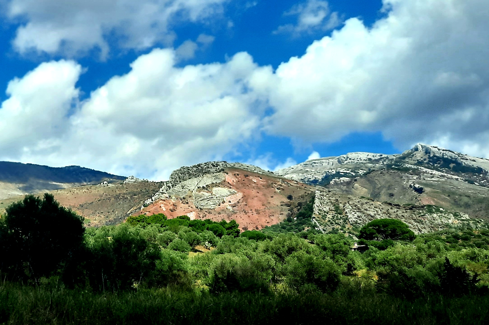

Argilliti silicizzate di C.da Firrione

ITALIANO - Superficie strutturale molto inclinata tra valli cataclinali formatasi a seguito di processi fluvio‐carsici, agevolati dalla struttura tettonica deformativa. E’ costituita da radiolariti e brecce calcaree risedimentate laddove i sedimenti silicizzati conferiscono al rilievo un caratteristico colore rosso mattone.
INGLESE - I am Gaetano Ferrarelli